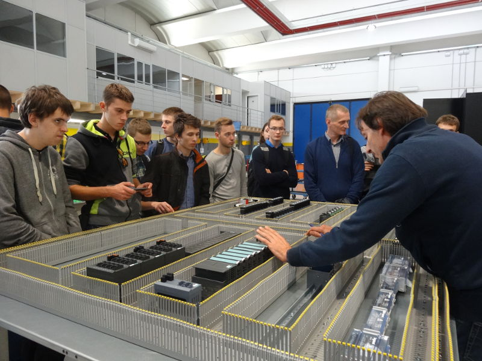

Strona główna
Witamy na stronie internetowej dotyczącej praktyki zawodowej polskich uczniów we Włoszech w ramach programu PO WER Erasmus+ - projekt "Spojrzenie w przyszłość", który jest realizowany przez Zespół Szkół Elektronicznych w Rzeszowie.
Praktyka zawodowa odbywała się od 30 września do 22 października 2016 r. 20 uczniów Zespołu Szkół Elektronicznych wyjechało do miasta Brescia, w którym odbyło swoje 3-tygodniowe praktyki zawodowe. Miasto Brescia leży na północy Włoch. Brescia jest drugim pod względem populacji miastem w Lombardii. Zostało założone przez Celtów ok. roku 390 p.n.e.
